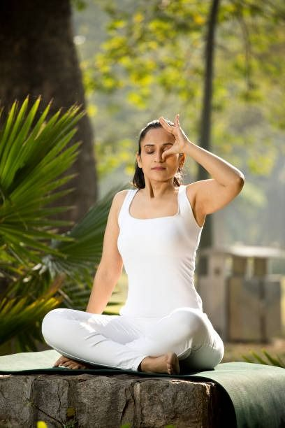

Yoga is more than just a form of exercise—it's a practice that nurtures both the mind and body, making it perfect for beginners who want to improve their physical and mental well-being. If you’re new to yoga, the good news is that it requires little equipment and can be practiced almost anywhere. The journey begins with understanding a few foundational tips, poses, and the multitude of benefits yoga offers.
Tips for Beginners
When starting out, it’s important to keep things simple and not worry about mastering complex poses immediately. Focus on breathing, which is at the heart of yoga. Slow, controlled breaths help maintain balance and ease through poses. It’s also essential to listen to your body—don’t push yourself into a position that feels uncomfortable. Practicing regularly, even for just 10-15 minutes a day, will lead to steady improvement in flexibility and strength. Investing in a good-quality yoga mat and wearing comfortable clothes can enhance your experience.
Basic Poses to Start Withb
For beginners, there are several gentle poses that help build a strong foundation. The Mountain Pose (Tadasana) is perfect for aligning your posture and engaging the core. The Downward Dog (Adho Mukha Svanasana) stretches the back and strengthens the arms and legs. Child’s Pose (Balasana) is a calming posture that allows you to rest and reconnect with your breath. Finally, the Warrior I (Virabhadrasana I) and Cat-Cow (Marjaryasana-Bitilasana) poses are ideal for beginners, as they open the chest, improve balance, and stretch the spine.
Benefits of YogaBenefits
The benefits of yoga are both immediate and long-lasting. Physically, it improves flexibility, strength, and posture, while also boosting energy levels. Over time, yoga can help reduce stress, anxiety, and even chronic pain. Mentally, the practice promotes mindfulness, helping individuals stay focused and calm in their daily lives. Many beginners also find that regular yoga improves their sleep patterns and overall mood.
The benefits of yoga are both immediate and long-lasting. Physically, it improves flexibility, strength, and posture, while also boosting energy levels. Over time, yoga can help reduce stress, anxiety, and even chronic pain. Mentally, the practice promotes mindfulness, helping individuals stay focused and calm in their daily lives. Many beginners also find that regular yoga improves their sleep patterns and overall mood.
Starting yoga is a journey, and it’s important to enjoy the process. Whether you’re looking to improve your physical health, find mental clarity, or simply de-stress, yoga can be an invaluable tool. Stick with it, and you’ll soon discover the transformative effects of this ancient practice.
-By Meera Patel
